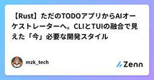
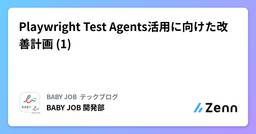
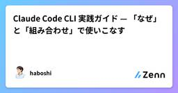
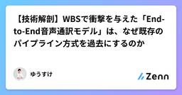
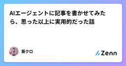
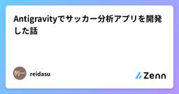

Zennの「AI」のフィード
フィード

【Rust】ただのTODOアプリからAIオーケストレーターへ。CLIとTUIの融合で見えた「今」必要な開発スタイル
Zennの「AI」のフィード
!この記事のまとめAIエージェントと人間が協働するためのローカルIssue管理CLI「Lissue」にフルスクラッチでTUIを実装しました。1つのバイナリでCLI（機械用）とTUI（人間用）を両立させ、SQLiteのWALモードでリアルタイムに状態を同期させています。AIがコードを書く時代において、人間は「思考の可視化」と「コンテキストの定義（オーケストレーション）」に集中できるインターフェースが必要になるという考察です。 はじめに前回の記事では、AIエージェントが自律的にタスクを消化するためのインターフェースとして、Rust製のローカルIssue管理ツール「Liss...
9時間前
AIでソースコードからテストケースを自動生成する
Zennの「AI」のフィード
AIでソースコードからテストケースを自動生成する「25画面、2ヶ月、テストケースゼロ...」これは、私たちのチームがRails ERBからVue.jsへのマイグレーションプロジェクトを受けた時に直面した状況だ。システムは何年も安定稼働していたが、仕様書もテストケースもなく、何よりチーム内で業務ロジック全体を理解している人がいなかった。エンジニアが1画面あたり2〜3日かけてコードを読み、テストケースを推測して書くとすると、25画面で50〜75日が必要になる。これはデッドラインを大幅に超えてしまう。この記事では、私たちがAIを使ってソースコードからテストケースを生成した方法と、そ...
11時間前
置物AI開発ログ5（裏） – Claudeと協業するためのドキュメント設計
Zennの「AI」のフィード
はじめに思想とか考えとかは表記事で書いてます。https://note.com/n_toma/n/n7eb81b947880個人開発にClaude（AIアシスタント）を本格導入して気づいたことがある。AIは文脈を持たない。毎セッション白紙からスタートするAIに、プロジェクトの背景・設計思想・ルール・現状を毎回口頭で説明するのは、現実的ではない。この問題を解決するために、自分のプロジェクト（OkimonoAI）で試みたのが、「AIが読むためのドキュメント設計」だ。 構成の全体像プロジェクトは2つのリポジトリで管理している。<parent>/ ├...
12時間前

Playwright Test Agents活用に向けた改善計画 (1)
Zennの「AI」のフィード
はじめにBABY JOB 開発部の乗田です。本記事では、Playwright Test Agents[1] (以下、Agents)を活用するための取り組みを紹介します。本シリーズは全4回を予定しています。改善計画の全体像（本記事）メール自動化によるE2Eテストの完全自動化カバレッジ計測によるテスト範囲の可視化Agentsの実現可能性の検証以下のような方を対象としています。E2Eテストを導入・運用しているが、手動作業が残っていて自動化しきれていないAIを使ったテスト生成に興味はあるが、実運用に乗せる方法がわからない なぜこの取り組みを始めたのかE2E...
12時間前
GitHub Copilot CLIのSkillsを使ったissue駆動開発
Zennの「AI」のフィード
はじめに株式会社ソニックムーブのmito1111です。近年、コーディング自体をAIに任せる「Vibe Coding」が広く普及し始めています。多くの開発者がAIを活用してコードを生成するようになりましたが、開発のトリガーとなるissueやチケットを作成したり、修正内容をまとめたプルリクエストを作成する部分については、まだ手動で行っているケースが多いのではないでしょうか。今回は、GitHub Copilot CLIのSkills機能を活用することで、issueの作成からプルリクエストの作成までをシームレスに実現する方法をご紹介します。本記事で紹介する内容はまだ試作段階ではあり...
12時間前
Motia × Strands Agent SDKで作るAIエージェント開発入門2
Zennの「AI」のフィード
はじめにこんにちは！今回の記事はMotiaとStrands Agent SDKを使ったAIエージェント開発をテーマに記事の第2回目の記事となります！https://zenn.dev/mashharuki/articles/aws_strands_agent_motia-1前回の記事でAPIサーバーとして動かすところまでは試したので今回はフロントエンドから呼び出してみる部分についてまとめている記事になります！バックエンドの実装についての解説はこの記事の中ではしないので気になる方は前回の記事をご覧ください！ぜひ最後まで読んでいってください！ 今回試したソースコード以...
12時間前

Claude Code CLI 実践ガイド — 「なぜ」と「組み合わせ」で使いこなす
Zennの「AI」のフィード
はじめにClaude Code は Anthropic が提供する CLI ベースの AI コーディングアシスタントだ。ターミナルから直接コードを読み、編集し、コマンドを実行できる。しかし claude --help を実行すると 50以上のオプション が表示される。公式ドキュメントやチートシートも存在するが、「何ができるか」の羅列に留まり、「なぜこう使うのか」「どう組み合わせるのか」が見えにくい。本記事では、Claude Code CLI を実践的に使いこなすための考え方とパターンを整理する。 対象読者Claude Code を業務で使い始めたエンジニア基本コマンド...
13時間前
GitHub Copilotのスラッシュコマンドやサブエージェントを使って、簡易レビュー実装 1
1
Zennの「AI」のフィード
はじめに自分が参画している現場で、GitHub Copilotを用いて、ローカルでAIレビューする仕組みを作ってみたので、どのようなものを作ったのかを紹介していきます。GitHub Copilotも知らないうちに結構進化していて、VScodeで使う分には使いやすいと感じたので、「こういう部分が便利！」みたいな情報も合わせて伝えられればと思います。Claude Codeなどと比べて、GitHub Copilotの機能などを紹介している記事は少ないように思うので、GitHub Copilotしか使えない環境の人にとって参考になる記事になれば幸いです。!仕事で作ったものと同じよう...
13時間前

ゆるキャラはAIに任せていいの？ 地域ブランドを揺るがす生成AIの光と影
Zennの「AI」のフィード
生成AIの普及により、地域おこしの「ゆるキャラ」制作はこれまでより格段に容易になるのではないか。従来はデザイナーへの依頼や複数案の検討など、時間と費用が大きな負担となっていたが、生成AIは短時間で多様な案を提示し、自治体の負担軽減に寄与する可能性があると思います。その一方で、AI生成物の著作権、既存キャラクターとの類似性、地域文化の表現の妥当性など、倫理的な論点も浮上してきます。今回は過去化に悩むとある町長さんがAIで町おこしをとの講演を聞きながら、ふと思ったAI活用の利点とリスクを整理し、地域ブランドを守りながらAIを活用するための視点を考えてみたいと思います。それはITプロの...
13時間前
AI時代のエンジニアの差は「速さ」ではない——「速さ × 問題規模」で考えるスキルモデル
Zennの「AI」のフィード
あなたは今、どのくらい複雑なシステムを一人で開発できるだろうか。複数のサービスが絡み合うシステムを、設計から破綻なく作り切れるか。要件の曖昧さを整理し、アーキテクチャの判断を下せるか。それとも今、担当しているのはサービス1本の中の、ある機能の実装だろうか。この問いに自然に答えられるとき、あなたはエンジニアとしての現在地を持っている。AIはあなたを速くした。チームの全員を、経験年数にかかわらず速くした。しかし速くなった分だけ、あなたが一人で責任を持てる問題の規模は大きくなったか。この非対称性を、ひとつのモデルで整理してみたい。 スキルモデル：速さ × 問題規模ソフトウェアエンジ...
13時間前
ターミナルと睨めっことはおさらばできるツール(huge-mouse)を作った
Zennの「AI」のフィード
はじめにClaude Code や Codex を tmux で動かしている人、こんな経験ありませんか？エディタでコードを眺めながら指示を出したいのに、毎回 Cmd+Tab でターミナルに切り替えるAI が「1. Yes / 2. No」と聞いてきただけなのに、1 を打つためだけにターミナルに戻る。複数の claude セッションを並走させていると、どのペインが今どの状態なのか把握しきれないこういう地味な操作コストが積み重なって、思考のフローが何度も途切れるのが地味にストレスでした。この問題を解消するために huge-mouse というデスクトップアプリを作りました。...
14時間前

【技術解剖】WBSで衝撃を与えた「End-to-End音声通訳モデル」は、なぜ既存のパイプライン方式を過去にするのか
Zennの「AI」のフィード
1. はじめに：音声AIにおける「第3の波」先日、WBS（ワールドビジネスサテライト）で特集された、日本発スタートアップによる「爆速・音声to音声（Speech-to-Speech）翻訳アプリ」。そのクオリティは、単なる「翻訳精度の向上」に留まりません。従来のAI開発における常識であった**「モジュール連結型（パイプライン方式）」を真っ向から否定し、一からスクラッチで学習させた独自モデル**によるパラダイムシフトです。本記事では、1時間にわたる議論とデモンストレーションから見えた、その圧倒的な技術的優位性を、エンジニアの視点で深掘りします。 2. 既存手法の限界：なぜ「継...
14時間前
AI Agent時代に、コードレビューが何を担っているのかを考えたい 1
Zennの「AI」のフィード
はじめにAI Agentを使った開発によって、コードのアウトプット量は爆発的に増えました。人がゼロから書くよりも圧倒的に速くたたき台が出てくるので、実装の初速は確実に上がりました。その意味では、継続的な開発サイクル全体のスピードも上がっている実感があります。ただ一方で、「コードが生成されること」と「本番環境にデプロイできること」のあいだにはまだ距離があると感じており、その中で、時間のかかるポイントの1つがレビューだと思っています。ここで「レビューがボトルネックだ」と言い切ってしまうと、少し語弊がある気もしています。レビュー自体が悪いわけではなく、本番投入までのフローを成立...
14時間前
コードを手放す
Zennの「AI」のフィード
はじめにAIと二人三脚で進めば「わからないとできない」から「わからないけどできる」になった。だとしたら「わかる」って必要なんだろうか？みたいな感じで考えてたのが2025年。 手放してみようと思ったSpotify「シニアエンジニアは12月以降、1行もコードを書いていない」 共同CEOが同社のAIコーディング事情明かすの話は結構衝撃だった。個人的にはAIエージェントが出たときよりも衝撃だった。なので、コードを手放してみようと思った。 手放してみたプライベートの開発に以下の制約を入れた思いついたことは全部やるコードは書かない実装はGitHub Copilotに...
14時間前
【5分で動かす】AIエージェントとMCPサーバーの通信を監査する agentwit 入門
Zennの「AI」のフィード
はじめに前回の記事ではagentwitの設計思想（Guard vs Witness）について書いた。今回は実際に動かす手順を説明する。インストールから監査レポート生成まで5分で完了する。対象読者：MCPサーバーを使っているAIエンジニアAIエージェントの挙動を記録・監査したいセキュリティエンジニアペネトレーションテストでAIエージェントを対象にしている人 agentwitとはAIエージェントとMCPサーバーの間に透過プロキシとして挟み、全通信をSHA-256チェーン付きで記録するOSSツール。AIエージェント ↓ agentwit proxy ...
14時間前
Tm系ニューロン、文献はGluと言ったがFlyWireはAChと言った
Zennの「AI」のフィード
Tm系ニューロン、文献はGluと言ったがFlyWireはACh言った 1. 背景ハエの視覚系をPyTorchで実装している。メデュラ深部のTm（Transmedullary）ニューロンが次のターゲットだった。Tm1, Tm2, Tm4, Tm9 — これらは「動き処理」の要の部分。実装する前に、FlyWireのコネクトームデータでnt_type（神経伝達物質）を確認することにした。 2. 予測文献（Borst et al. 2014など）によれば：Tm1, Tm2, Tm4 → Glu（グルタミン酸）、抑制性Tm9 → Motion経路「OFF経路は抑制性が...
14時間前

AIエージェントに記事を書かせてみたら、思った以上に実用的だった話
Zennの「AI」のフィード
!この記事は、AIアシスタント「クロちゃん」が執筆しました。 最近のAIエージェント、マジで進化してる2026年2月にClaude Sonnet 4.6がリリースされた。コンピューター操作が人間レベルになったとか、エージェント機能が大幅強化されたとか、そういう話は聞いていた。でも実際どうなの？ってところが気になって、ここ数週間いろいろ試してた。結論から言うと、想像以上に使える。 何をやらせたか今回試したのは、技術記事の執筆フロー全体を自動化すること。具体的には:ネタ収集（Web検索）記事構成の検討執筆レビュー修正これを全部AIエージェントに任せてみた。...
14時間前

仕様駆動開発という間違い
Zennの「AI」のフィード
巷で流行りの仕様駆動開発は間違ってるのでやめましょう。今後の開発はエージェントが主役なので、全てをエージェント中心に考えるべきです。人間が読むためのドキュメントなどノイズで無駄。知りたいことがあったらエージェントに聞くべきです。そのために必要なのは、エージェントがより正しく動くためのルールと成果物が必要です。 仕様書仕様書は必要です。ですが、エージェントの役に立つ仕様書以外は全て不要なノイズです。エージェントの役に立つ仕様書は以下の三通りしかありません。コードを読んでもわからない情報コードを読むためのガイドラインになる情報コード コードを読んでもわからない情報...
15時間前
作ることのボトルネックを仕組みで消してツールを量産する
Zennの「AI」のフィード
作りたいものリストはあるが、3か月前も同じリストを眺めていた気がする。普通に生きていたら、唐突に「作らないのは死」というフレーズが頭に浮かんだ。インプット過多な現状に危機感を覚え、いったん作る数を増やすか〜と思い立ち、その過程で気軽にアウトプットできる仕組みを作った。その結果、ひと月でChrome拡張、CLIツール、npmライブラリなど十数個を作った。gh-repo-growthによるリポジトリ数の推移の可視化 2つのボトルネック手が止まる原因は主に2つに集約できた。アイディアが出ないことと、出ても着手が億劫になり後回しにしがちなことである。より解消しやすそうな後者へ先...
15時間前

Antigravityでサッカー分析アプリを開発した話
Zennの「AI」のフィード
Antigravityを活用した、個人開発によるサッカー分析アプリの構築こんにちは！今回は、大好きなサッカー（特にマンチェスター・ユナイテッド！）への情熱を形にするべく、AIツールをフル活用して1人で開発したサッカー分析アプリ「SCORE LAB」についてご紹介します。今回メインで使用したエディタはgoogleが開発しているAntigravityを使いました。最近ClaudeCodeがかなり流行っているような感じもしますが、今回の開発を通じてAntigravityのすごさもかなり実感しました。 1. AIを開発パートナーとして活用このプロジェクトの最大の特徴は、要件定義か...
16時間前